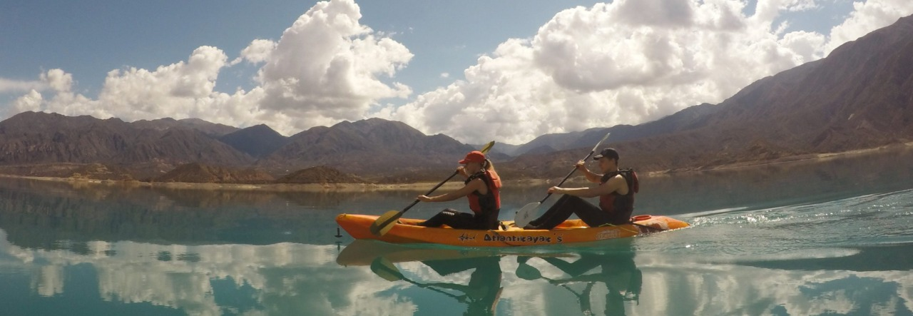
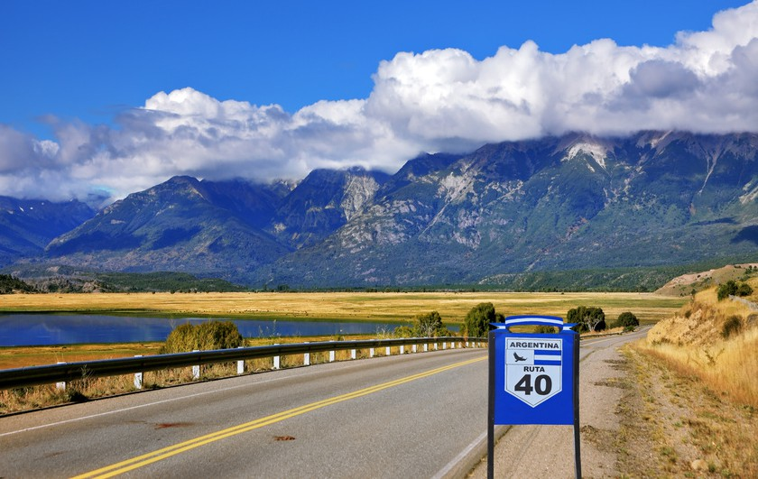

La Ciudad de Mendoza es la capital política, administrativa y financiera provincial. Fue el lugar elegido por Pedro del Castillo para fundar la ciudad que en tiempos remotos fue el centro cívico provincial donde se levantó el Cabildo de Mendoza, la Iglesia Matriz y Plaza Mayor. Para resguardar las ruinas de estas edificaciones se construyó el Museo del Área Fundacional donde los turistas pueden adentrarse en la historia recorriendo cada una de las salas que representan el paso del tiempo. El Parque Gral. San Martín es el exponente máximo de la labor del hombre que transformó el pedemonte desértico en un oasis artificial en el que desde la entrada al mismo por los imponentes portones de estilo inglés, grupos escultóricos, espacios verdes, fuentes de agua, lago artificial y clubes deportivos le han dado un sello único a todo aquel que lo recorre caminando o en vehículo. En él también se encuentra el Estadio Mundialista Malvinas Argentinas, el Ecoparque y el Cerro de la Gloria donde puede apreciarse una obra escultórica de gran magnitud que es el monumento al Ejército Libertador. El Parque Enrique Menotti Pescarmona y el Parque San Vicente Ferrer, ambos ubicados en Godoy Cruz, son otros de los espacios verdes elegidos para disfrutar al aire libre de espectáculos artísticos o simplemente detenerse a descansar. Los centros religiosos constituyen parte de los atractivos de esta zona destacándose el Santuario de la Virgen de Lourdes ubicado en El Challao (Las Heras) o el conjunto religioso conformado por la Iglesia de La Carrodilla “Patrona de los Viñedos” y el Calvario, donde cada año en Semana Santa es el punto de encuentro para realizar el Vía Crucis. La Basílica de San Francisco y Catedral Nuestra Señora de Loreto en la Ciudad de Mendoza y la Parroquia San Vicente Ferrer en Godoy Cruz conforman un rosario de atractivos religiosos para todos los creyentes que visitan Mendoza durante todo el año o en Semana Santa. En Lavalle sobresalen las Capillas de Nuestra Sra. del Rosario, de San José, del Cavadito y de Asunción que dan lugar a las más importantes y pintorescas fiestas religiosas con coloridas procesiones, rituales, cantos y danzas. Las expresiones artísticas y culturales están presentes en destacados museos como el Museo Nacional del Vino y la Vendimia en Maipú o recorrer el paseo de artesanos en la Plaza de Chacras de Coria donde reconocidos pintores y artistas locales exponen sus creaciones. Al noroeste de la provincia, en Lavalle, se aprecia el contraste de paisajes entre el oasis y grandes espacios áridos vivos y ondulantes dunas de arena. La mixtura del turismo rural, natural, cultural y religioso que rescata milenarios patrimonios, usos y costumbres y curiosas leyendas, son la herencia de los pueblos de etnia huarpe, que habitaban las lagunas de Guanacache. Realizar actividades ecoturísticas en el mágico secano lavallino es descubrir el secreto de los médanos de los Altos Limpios y de la Reserva de los Bosques Telteca donde surgen entre la flora del monte centenarios bosques de algarrobos y chañares y una riquísima fauna liderada por el bullicio múltiple de especies de aves.